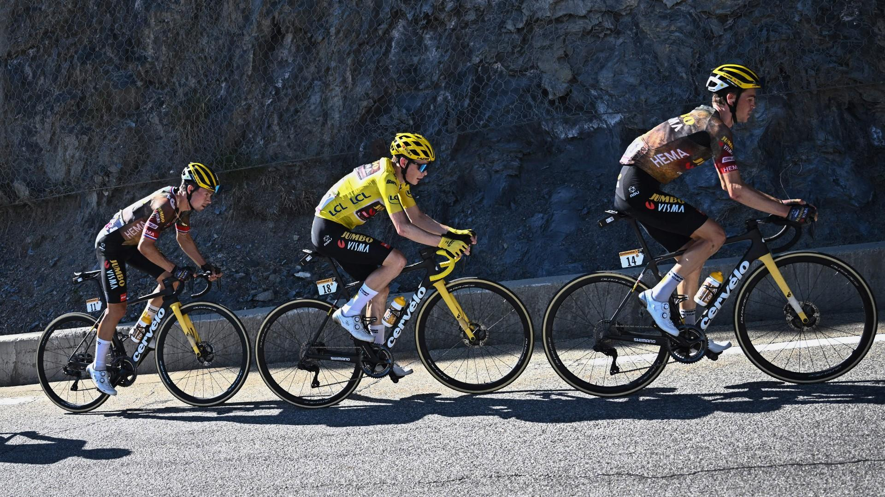

Mountain Stage – Alps
A decisive mountain stage featuring multiple categorized climbs and a summit finish. General classification contenders will look to gain time here.
Expect dramatic attacks, shattered groups, and big time gaps as riders battle over steep gradients and switchbacks.
